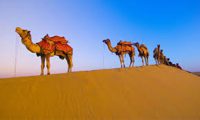
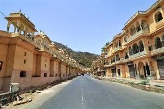
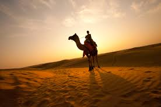
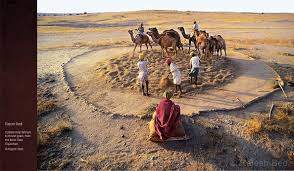
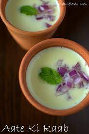

RAJASTHAN





About
Rajasthan is a state in northern India. It is the largest Indian state by area and the seventh largest by
population. It is on India's northwestern side, where it comprises most of the wide and inhospitable Thar
Desert (also known as the Great Indian Desert) and shares a border with the Pakistani provinces of Punjab to
the northwest and Sindh to the west, along the Sutlej-Indus River valley. It is bordered by five other Indian
states: Punjab to the north; Haryana and Uttar Pradesh to the northeast; Madhya Pradesh to the southeast; and
Gujarat to the southwest.
Its major features include the ruins of the Indus Valley Civilisation at Kalibangan and Balathal, the Dilwara
Temples, a Jain pilgrimage site at Rajasthan's only hill station, Mount Abu, in the ancient Aravalli mountain
range and in eastern Rajasthan, the Keoladeo National Park of Bharatpur, a World Heritage Site known for its
bird life. Rajasthan is also home to three national tiger reserves, the Ranthambore National Park in Sawai
Madhopur, Sariska Tiger Reserve in Alwar and the Mukundra Hills Tiger Reserve in Kota.
Its capital and largest city is Jaipur. Other important cities are Jodhpur, Kota, Bikaner, Ajmer, Bharatpur
and Udaipur. Rajasthan ranks 29th among Indian states in human development index.
Contact
Rajasthan is a state in northern India. It is the largest Indian state by area and the seventh largest by population. It is on India's northwestern side, where it comprises most of the wide and inhospitable Thar Desert (also known as the Great Indian Desert) and shares a border with the Pakistani provinces of Punjab to the northwest and Sindh to the west, along the Sutlej-Indus River valley. It is bordered by five other Indian states: Punjab to the north; Haryana and Uttar Pradesh to the northeast; Madhya Pradesh to the southeast; and Gujarat to the southwest. Its major features include the ruins of the Indus Valley Civilisation at Kalibangan and Balathal, the Dilwara Temples, a Jain pilgrimage site at Rajasthan's only hill station, Mount Abu, in the ancient Aravalli mountain range and in eastern Rajasthan, the Keoladeo National Park of Bharatpur, a World Heritage Site known for its bird life. Rajasthan is also home to three national tiger reserves, the Ranthambore National Park in Sawai Madhopur, Sariska Tiger Reserve in Alwar and the Mukundra Hills Tiger Reserve in Kota. Its capital and largest city is Jaipur. Other important cities are Jodhpur, Kota, Bikaner, Ajmer, Bharatpur and Udaipur. Rajasthan ranks 29th among Indian states in human development index.
SPECIAL DISHES OF RAJASTHAN

DAAL BAATI CHURMA

KER SANGRI

PAPAD KI SABJI

BAJRA kI ROTI WITH LEHSUN KI CHUTNEY
RAAB

PYAZ KACHORI